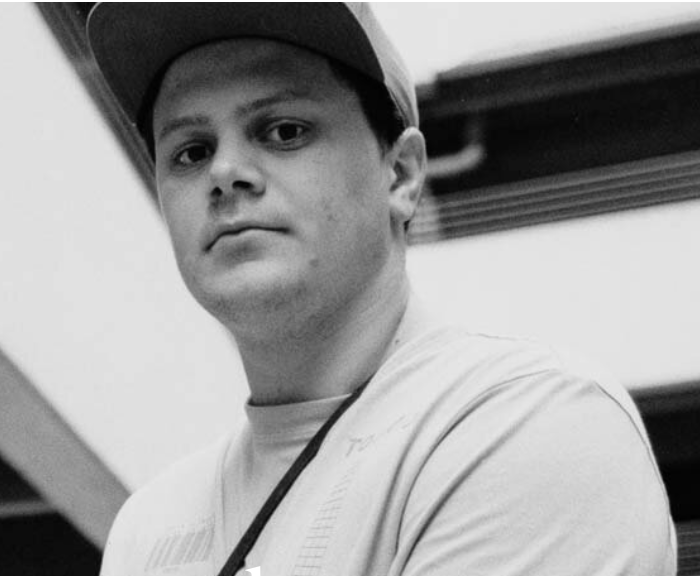

About Us
“Ivy Media is a production company founded upon an ethos of collaboration and vision.” Ivy Media offers a variety of services including film production and photo. They specialize in documentary film, music videos, and commercial work. Ivy Media has a long list of credible clients including multiple corporations, touring bands, local shops, and many more. They have two cofounders, and they work with a lot of other local talented creative individuals. Ivy Media just moved into their new location in downtown Chippewa Falls, Wisconsin.
Ivy Media is continuously looking to take on new clients and projects. They are looking to expand their portfolio and grow the business. They offer studio space for creatives to work at as well as their own skills as director of photography, photographers, drone work, full production, and more.
Founder
Kyle Lehman

Kyle Lehman is a Photographer/Cinematographer based in Chippewa Falls, Wisconsin. His diverse background in different facets of the photography landscape, and his eye for intention is where he makes his mark known. His small-town midwestern work ethic has allowed his work to be featured on The Late Night Show with Steven Colbert, U.S. Senator Tammy Baldwin visiting his studio, and a sizable list of national publications using his content. Through traveling and documenting the country with some of the top up and coming rock bands, and his experience in the commercial sector working case studies for many different industries, Kyle has made a name for himself and his way of understanding and translating brand identity to most accurately portray the tone and intention of the subject, product or service.
Website